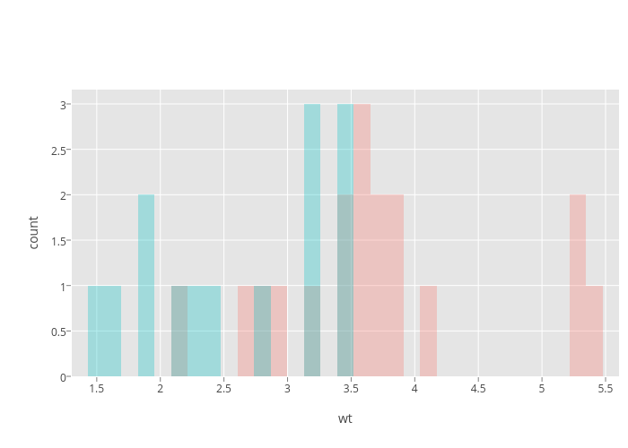
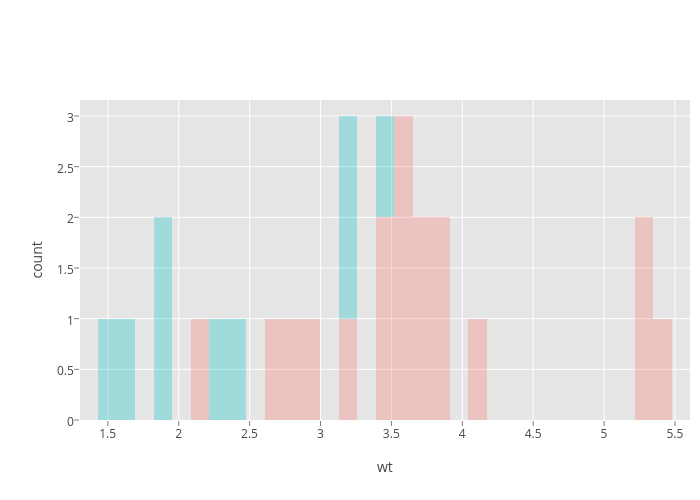

<!-- html table generated in R 3.2.0 by xtable 1.7-4 package -->
<!-- Thu May 21 05:07:59 2015 -->
<table border=1>
<tr> <th> test </th> <th> ggplot2 </th> <th> carson.cookbook.density </th> <th> master </th>  </tr>
  <tr> <td> histogram-fill-factor-identity </td> <td> <br />  </td> <td> <br />  no-json-file png-md5-diff </td> <td> <br />  no-json-file </td> </tr>
   </table>
